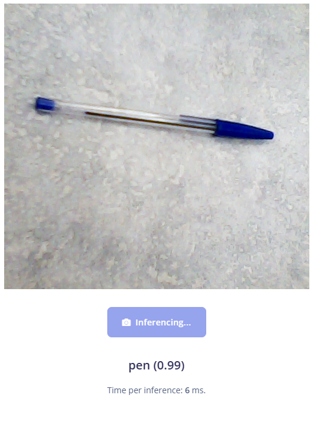

t1a14-AI-edgeimpulse-hayden.html
- Visual Classification
- Wake word (sound)
- Motion (Movement x, y, z)
- Visual Object Detection FOMO (faster objects more objects)
- Visual Regression
- Visual Anomaly Detection
Data Entry
Data Totals

Data Explorer

Unknown Correct

Pen Correct
